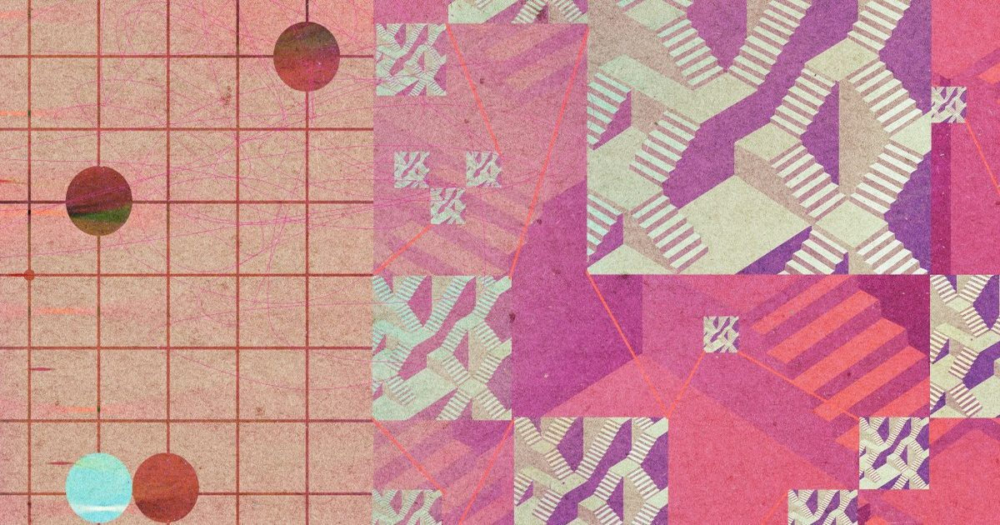

Не обманывайтесь - LLM не рассуждают
Во второй половине дня в Сеуле в марте 2016 года я смотрел программу, которую я помог построить, поставил камень на пятую строчку доски для го, что выглядело как подарок его человеческому противнику.
Ход 37 во второй игре пятиматчевого матча выглядел настолько абсурдно, что некоторые комментаторы думали, что это...